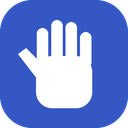

Gesture Control
Hand signs, face & head moves, eye gaze, desk taps and whistles → Chrome. Everything runs on this device.
Get started
-
Chrome asks once for this extension. The microphone is only used if you switch on Sounds. - The badge on the toolbar icon shows ON, or II while paused. Alt+Shift+G pauses and resumes from anywhere.
- Pick a preset below, then calibrate (right): about a minute, and it makes everything far more reliable.
Inputs
Speed
Needs the gaze calibration (right) for your screen.
Each scroll gesture moves of the window
Gestures → actions
A hand sign must be held still for a moment and fires once; drop your hand to do it again. Face and head moves fire once per move. Single desk taps wait ~0.6 s to rule out a double tap.
Anki desktop (optional)
For the "Anki:" actions: install the AnkiConnect add-on in Anki desktop (Tools → Add-ons → Get Add-ons, code 2055492159), keep Anki open, then connect. Anki asks once to allow this extension.